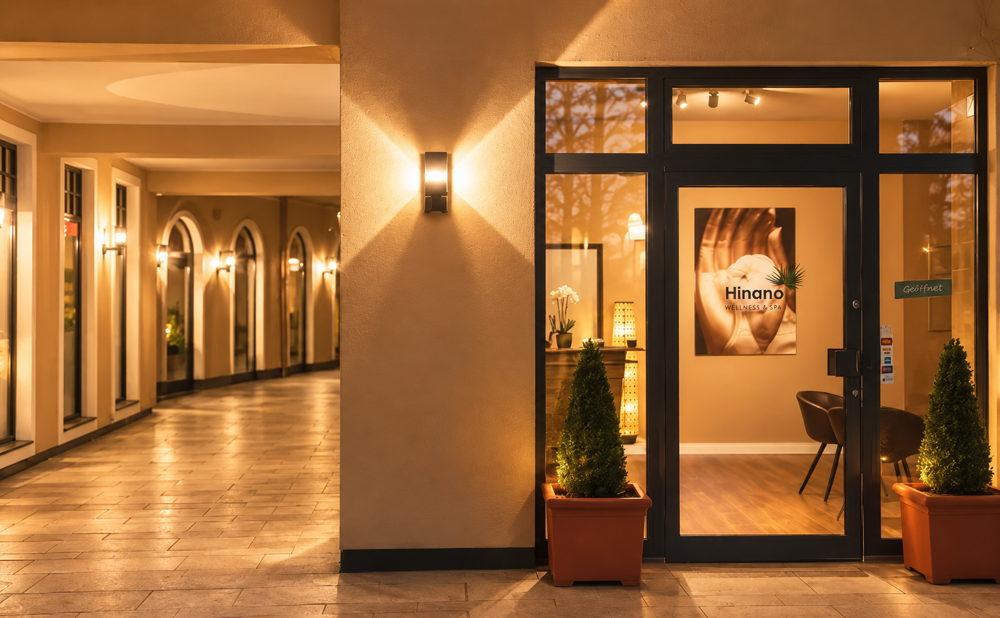
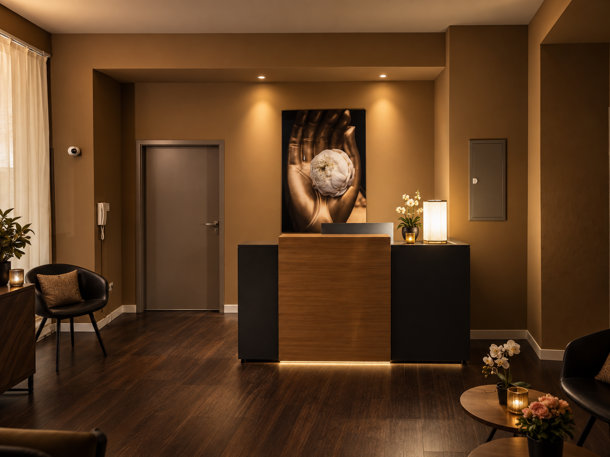
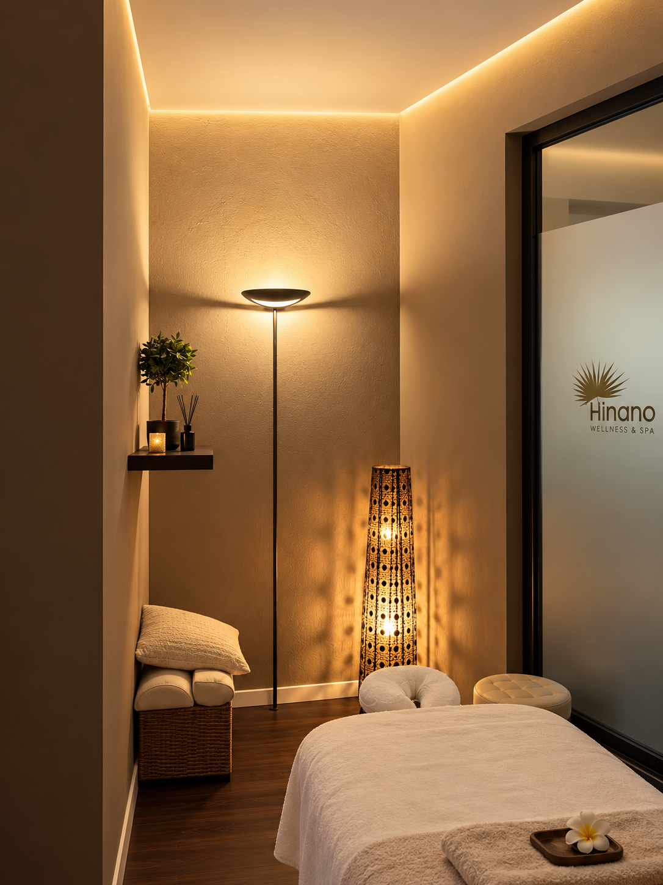
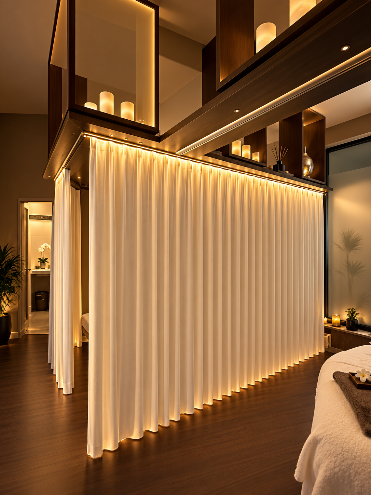

Wellness- & Entspannungsmassage
Hinano Calm Ritual
Eine ruhige, wohltuende Massage zum Loslassen, Abschalten und Entspannen.
60 Min / 65 € — 90 Min / 90 € — 120 Min / 120 €
Buchen →Massage & Wellbeing · München Isartor
Premium Massagen & Wellbeing im Herzen Münchens. Ein Ort zum Ankommen, Loslassen und Auftanken.
Zweibrückenstraße 8 · 80331 München

Hinano Rituals
Hinano ist ein Ort für bewusste Auszeit, tiefgehende Entspannung und neue Energie. Mit ausgewählten Massageritualen verbinden wir traditionelle Techniken mit einem modernen Wellbeing-Erlebnis.
Unser Angebot
Individuell auf deine Bedürfnisse abgestimmt. Professionell ausgeführt. In einem stilvollen, ruhigen Ambiente.
Hinano Calm Ritual
Eine ruhige, wohltuende Massage zum Loslassen, Abschalten und Entspannen.
60 Min / 65 € — 90 Min / 90 € — 120 Min / 120 €
Buchen →Deep Release Ritual
Eine umfassende Massage für den ganzen Körper – ideal für eine ausgedehnte Wohlfühlpause.
60 Min / 70 € — 90 Min / 95 € — 120 Min / 125 €
Buchen →Botanical Aroma Ritual
Sanfte Massage mit wohltuendem Öl für ein besonders entspanntes Körpergefühl.
60 Min / 70 € — 90 Min / 95 € — 120 Min / 125 €
Buchen →Traditional Nuad Ritual
Traditionelle thailändische Techniken mit gezieltem Druck und wohltuenden Dehnungen.
60 Min / 75 € — 90 Min / 105 € — 120 Min / 135 €
Buchen →10 % auf alle Massagen ab 60 Minuten · gültig bis 31.10.2026
Das Hinano-Erlebnis
Raum, um wieder bei dir anzukommen.
Bewusst loslassen und den Alltag draußen lassen.
Gezielte Körperarbeit für neue Energie.
Ein Moment, der bleibt.
Unser Team
Jede Massage trägt eine eigene Handschrift. Lerne unser Team und seine Schwerpunkte kennen.
Thai-Massage · Entspannung
Spezialistin für Thai Massage Nang verbindet die Kraft der traditionellen thailändischen Massage mit erfahrenen Händen und einem ausgeprägten Gespür für den Körper. Mit gezieltem Druck und bewusster Berührung arbeitet sie dort, wo Spannung und Belastung besonders spürbar sind. Ihre besondere Stärke liegt in der Arbeit an Füßen, Kopf und Nacken. Ihre Massage ist kraftvoll und präzise, bleibt dabei wohltuend und wird immer auf die Bedürfnisse des jeweiligen Gastes abgestimmt. Das Ziel: loslassen, zur Ruhe kommen und sich danach leichter und freier fühlen. Nang Signature: ENTSPANNUNG Für alle, die eine authentische Thai-Massage mit kraftvoller, gezielter Körperarbeit und tiefer Entspannung suchen.
Wellness · intensive Körperarbeit
Natascha arbeitet intensiv und zugleich achtsam. Mit gezielten Griffen löst sie verspannte Muskulatur und schenkt Nacken, Kopf und Füßen besondere Aufmerksamkeit – präzise Körperarbeit verbunden mit Ruhe und sicherem Gespür.
Balance · gezielte Körperarbeit
Spezialistin für Balance Sissis Stärke liegt in der Verbindung von langjähriger Erfahrung, präziser Körperwahrnehmung und gezielter Körperarbeit. Sie erkennt schnell, wo der Körper Spannung hält, Beweglichkeit verliert oder besondere Aufmerksamkeit braucht – und richtet ihre Behandlung genau darauf aus. Ihr Treatment verbindet tiefe Entspannung mit gezielter Arbeit am Körper. Das Ergebnis: mehr Leichtigkeit, Bewegungsfreiheit und ein ausgeglicheneres Körpergefühl. Sissis Signature: BALANCE Für alle, die Verspannungen lösen, ihren Körper wieder freier bewegen und gleichzeitig tief entspannen möchten.
Regeneration · intensive Massage
Spezialist für intensive Körperarbeit Wezas Stärke liegt in der Verbindung von Kraft, Präzision und einem ausgeprägten Gespür für den Körper. Er arbeitet intensiv und gezielt und verbindet kräftige Massagegriffe mit Elementen aus körperorientierter und physiotherapeutischer Arbeit. Dabei geht es nicht um Kraft um der Kraft willen, sondern darum, genau zu erkennen, was der Körper in diesem Moment braucht. Sein Treatment soll spürbar etwas verändern: Der Körper fühlt sich gelöster, beweglicher und gleichzeitig tief entspannt an. Das besondere Gefühl danach: Hier wurde wirklich gearbeitet – und es hat gutgetan. Weza ist die richtige Wahl für alle, die eine kräftige, intensive und gezielte Massage schätzen. Seine Hände verbinden Technik und Erfahrung mit Aufmerksamkeit und echter Freude am Menschen. Wezas Signature: REGENERATION Für alle, die Verspannungen gezielt bearbeiten, Beweglichkeit zurückgewinnen und ihrem Körper eine intensive Form der Regeneration schenken möchten.
Das Studio
Warmes Licht, ruhige Farben und Raum zum Ankommen.



Dein Moment
Wähle deine Behandlung und deinen Wunschtermin direkt online.
Jetzt Termin buchenDie Online-Reservierung wird in Kürze freigeschaltet.Anfahrt & Kontakt
Zweibrückenstraße 8
80331 München
Isartor · im Hinterhof
Montag 16:30 – 20:00 Uhr
Dienstag 14:00 – 20:00 Uhr
Mittwoch 14:00 – 20:00 Uhr
Donnerstag 14:00 – 20:00 Uhr
Freitag 11:00 – 20:00 Uhr
Samstag 10:00 – 22:00 Uhr
Sonntag 13:00 – 20:00 Uhr